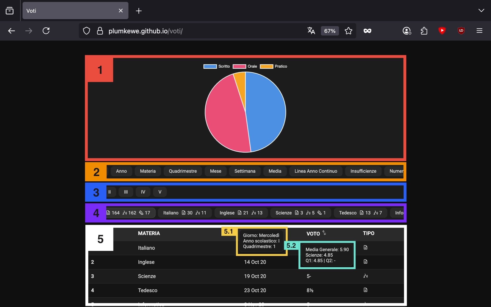

Durante gli anni di scuola avevo iniziato a raccogliere i voti che prendevo, prima annotandoli in un foglio Excel con qualche grafico per visualizzarli meglio. Avevo anche messo in piedi un database MySQL per gestirli in modo più strutturato, ma alla fine, per semplificarmi la vita, non lo tenevo sempre aggiornato.
La realizzazione di questo sito, pur non essendo perfetto, è stata possibile grazie al vibe coding. Inoltre è disponibile anche una pubblicazione sul mio blog in cui parlo di questo progetto.

L’immagine mostra come è organizzato il sito e quali sono le sue principali funzionalità. La struttura è suddivisa in cinque aree:
Questa sezione è dedicata alla visualizzazione dei grafici interattivi. I grafici si aggiornano dinamicamente in base alle selezioni effettuate nelle altre sezioni del sito.
Gli utenti possono scegliere tra diversi tipi di grafici disponibili, ciascuno rappresentante un aspetto specifico dell’andamento scolastico. I grafici disponibili sono:
Tipo
Grafico a torta che mostra la distribuzione dei compiti svolti per tipologia: scritto, orale e pratico.
Anno
Grafico a barre che rappresenta il numero totale di voti ricevuti per ciascun anno scolastico.
Materia
Grafico a colonne impilate che visualizza, per ogni materia, la quantità di voti per ciascuna tipologia (scritto, orale, pratico). Utilizza la stessa codifica cromatica del grafico "Tipo".
Quadrimestre
Grafico a barre che mostra il numero totale di voti ricevuti nel primo e nel secondo quadrimestre.
Mese
Grafico a barre che illustra quanti voti sono stati assegnati mese per mese.
Settimana
Grafico a barre che mostra la distribuzione dei voti ricevuti in base al giorno della settimana.
Media
Grafico a linee che rappresenta l’andamento della media mensile dei voti.
Linea Anno Continua
Grafico a linea continua che visualizza l’andamento dei voti nel tempo. È particolarmente utile quando si analizza una singola materia su più anni, oppure tutte le materie in un solo anno.
Insufficienze
Grafico a barre che mostra il numero totale di insufficienze registrate per ciascun anno scolastico.
Numero
Grafico a colonne impilate che mostra, per ogni materia, il numero di sufficienze e insufficienze ottenute.
Frequenza
Grafico a colonne impilate che evidenzia, per ciascun voto, con quale frequenza è stato assegnato e a quale materia è associato.
Media Q1
Grafico a barre che mostra la media dei voti per materia nel primo quadrimestre.
Media Q2
Grafico a barre che mostra la media dei voti per materia nel secondo quadrimestre.
Confronto Q1 vs Q2
Grafico a barre che confronta, per ciascuna materia, la media del primo quadrimestre con quella del secondo.
È possibile selezionare uno o più anni scolastici (es. Primo, Quinto o tutti insieme). La selezione degli anni influenza sia i grafici che la tabella sottostante. Ogni anno selezionato è rappresentato da un colore distinto nel grafico, per facilitarne la distinzione visiva.
Qui viene mostrato l’elenco delle materie, ognuna accompagnata dal numero di voti ricevuti, suddivisi per tipologia: scritto, orale e pratico.
Anche questa sezione è influenzata dalla selezione degli anni.
È possibile, ad esempio, selezionare Economia Aziendale e analizzare i dati per tutti e cinque gli anni.
Contiene i dettagli dei singoli voti, organizzati in colonne:
4.5 sarà mostrato come 4½), anche questa colonna è ordinabile Tipo: Tipologia del voto, rappresentata da un’icona:
Passando il mouse sull’icona (hover) viene visualizzata una descrizione dettagliata.
5.1 Cliccando su una cella nella colonna Data, appare un messaggio con informazioni dettagliate:
5.2 Cliccando su una cella nella colonna Voto, viene mostrato un riepilogo con:
Tutti questi valori si aggiornano dinamicamente in base alla selezione degli anni e delle materie.
È possibile caricare un file .csv personalizzato, formattato secondo la seguente struttura:
| INDEX | MATERIA | DATA | VOTO | TIPO | Q | A | |-------|----------|------------|------|---------|---|---| | 1 | Italiano | 2 Oct 20 | 5 | Scritto | 1 | 1 | | 2 | Inglese | 14 Oct 20 | 7.85 | Scritto | 1 | 1 | | 3 | Scienze | 19 Oct 20 | 4.85 | Orale | 1 | 1 |
Il file verrà salvato localmente nella cache del browser.
Per cancellarlo, clicca sull’icona del cestino accanto al pulsante di caricamento.